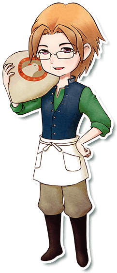

里克

莉莉娅的儿子，珀布莉的哥哥。
由于父亲不在家而努力的想要守护着这个家庭。
处处为妹妹着想，所以经常会发牢骚。
简略说明
- 登场：最初
- 住所：小鸡与莉莉娅
- 性别：男
- 生日：秋27日（秋23日）
- 家庭成员：母亲（莉莉娅），妹妹（珀布莉）
喜欢与讨厌的物品
- 最喜欢：温泉蛋
- 很喜欢：玉米、鸡蛋、蛋黄酱、玉子烧、布丁
- 喜欢：菠萝、饭团、炸薯条
- 普通：洋葱、苹果、面包、大阪烧
- 讨厌：南瓜、番薯、水煮蛋、年糕
- 很讨厌：咖喱面包、羊毛、钻石
行程
| 状况 |
AM |
PM |
AM |
| 6 |
7 |
8 |
9 |
10 |
11 |
12 |
1 |
2 |
3 |
4 |
5 |
6 |
7 |
8 |
9 |
10 |
11 |
12 |
| 单身 |
一、三~日 |
养鸡场 |
杂货屋前 |
养鸡场1楼 |
养鸡场 |
养鸡场1楼 |
旅馆1楼 |
养鸡场2楼 |
| 一、三~日（雨、雪） |
养鸡场 |
养鸡场2楼 |
旅馆1楼 |
养鸡场2楼 |
| 二 |
养鸡场 |
广场 |
养鸡场1楼 |
铁匠铺 |
养鸡场1楼 |
旅馆1楼 |
养鸡场2楼 |
| 婚后 |
一、三~日 |
自宅 |
养鸡场1楼 |
养鸡场 |
养鸡场1楼 |
旅馆1楼 |
自宅 |
| 一、三~日（雨、雪） |
自宅 |
养鸡场1楼 |
旅馆1楼 |
自宅 |
| 二 |
自宅 |
广场 |
养鸡场1楼 |
铁匠铺 |
养鸡场1楼 |
旅馆1楼 |
自宅 |
通过养鸡来提高好感度
身为养鸡场继承人并特别喜爱鸡的里克。
送礼物的话推荐送他最爱的「温泉蛋」，只需要把鸡蛋扔进温泉马上就会变成温泉蛋。
效果与鸡蛋品质无关，所以使用「普通品质的鸡蛋」会比较好。
如果想和他的关系更进一步，可以扩建「鸡兔笼舍」并且饲养8只鸡。
鸡的平均好感度高于150（6 ）的话里克的好感度也会上升
）的话里克的好感度也会上升
满足一定条件后好感度上升
| 鸡的平均好感度 |
里克的好感度 |
| 150以上 |
+2500 |
| 180以上 |
+2500 |
| 210以上 |
+2500 |
| 230以上 |
+2500 |
| 250以上 |
+2500 |
※ 主人公牧场里必须饲养8只鸡以上
※ 只有第一次达成时才会上升
※ 尚未确认饲养安哥拉兔是否触发里克好感度上升
居民事件
里克与凯的争吵、亲子之爱、来自爸爸的信
恋爱事件
 相遇好感度0以上
相遇好感度0以上
- 星期：一、二、三、四、五、六
- 天气：晴
- 时间：AM11:00～PM1:00
- 地点：养鸡场1楼
- 其他条件：
里克和莉莉娅在养鸡场里
背包里有空位
- 结果：
很喜欢 → +3000（莉莉娅、珀布莉亲密度+20）
讨厌 → -2000（莉莉娅、珀布莉亲密度-10）
朋友1好感度5000以上
- 星期：一、二、三、四、五、六
- 天气：晴
- 时间：AM11:00～PM1:00
- 地点：养鸡场1楼
- 其他条件：
里克和莉莉娅在养鸡场里
- 结果：
大约3天后 → +3000（莉莉娅、珀布莉亲密度+20）
一周后吧 → -2000（莉莉娅、珀布莉亲密度-10）
 朋友2好感度10000以上
朋友2好感度10000以上
- 星期：一、二、三、四、五、六
- 天气：晴
- 时间：AM11:00～PM1:00
- 地点：养鸡场1楼
- 其他条件：
里克和莉莉娅在养鸡场里
拥有大背包或整理架
背包里有空位
- 结果：
男主人公
好像有点湿啊 → -2000
别在意嘛 → +3000
女主人公
嗯有点… → -2000
没那回事呢 → +3000
 朋友3好感度20000以上
朋友3好感度20000以上
- 星期：二、三、五
- 天气：-
- 时间：AM8:20～PM10:00
- 地点：旅馆1楼
- 其他条件：里克在旅馆里
- 结果：
男主人公
那就做一点吧 →+3000
算了 → -2000
女主人公
那就承你所言 → +3000
算了→ -2000
 告白好感度30000以上
告白好感度30000以上
 恋人/知己1好感度40000以上
恋人/知己1好感度40000以上
- 星期：一、二、三、四、五、六
- 天气：晴
- 时间：AM11:00～PM4:00
- 地点：养鸡场1楼
- 其他条件：主人公饲养了一只以上的鸡
- 结果：
里克也在努力啊 → +3000（莉莉娅亲密度+20）
不努力点可不行哦 → -2000（莉莉娅亲密度-10）
 恋人/知己2好感度50000以上
恋人/知己2好感度50000以上
- 星期：-
- 天气：晴
- 时间：AM11:00～PM1:00
- 地点：自己家
- 其他条件：珀布莉和莉莉娅亲密度在150以上
- 结果：
你可以多找我帮忙的 → -2000（莉莉娅亲密度-10）
一起加油吧 → +3000（莉莉娅亲密度+20）
 求婚好感度60000以上
求婚好感度60000以上结婚·知己之仪
- 求婚成功的一周后。
- 结果：
参加仪式的居民亲密度+20
珀布莉和莉莉娅亲密度达到最大值
称呼
- 和对象结婚以后。
- 结果：对方会以自己选择的称呼来叫自己